Definations
-
Static: It deals eith the force and their effects while acting upon the bodies at rest.
-
Dynamics: It deals with the forces and their effects while acting upon the bodies in motion.
- Kinetics: It deals with the bodies in motion due to application of force.
- Kinematics: It deals with the bodies in the motion without any reference to the force which are responsible for the motion.
Engineering Mechanics
- It is the science which deals with the physical state of rest or motion of the bodies under the action of force.
- Depending upon the nature of the body involved, it can be further divided into mechanics of rigid bodies, mechanics of fluids.
- Rigid Bodies : Rigid bodies are those which do not deform under the action of applied force.
-
The mechanics of rigid bodies is studies in two parts: Statics and Dynamics.
-
Statics deals with bodies at rest and Dynamics deals with bodies in motion.
-
Particles: It is defines as an object use mass is concentrated at a point . This assumption made with the size of a body is negligible and irrelevent to the study of motion of the body.
Basic Concept
The Study of mechanics involves the concept of Space, Time, Mass, Force.
- Concept of Space: It is essential to fixed the position of a point. To fully define the position of a point in space, we shall need to define some form of reference and coordinate system.
- Concept of Time: It is essential to relate the sequence of the event.
For Example: Starting and Stoping of the motion of a body.
- Concept of Mass: It is essential as an agency which change or tends to change the state of rest or the state of uniform motion of a body.
Fundamental Principles
- Newtons law of motion.
- Newton law of gravitation.
- The parallelogram law for the addition of forces.
- The principle of transmissibility of forces.
-
Newton's 1st Law of Motion: Every body continues in a state of rest or of
uniform motion in a straight line unless it is employed to change that state by a
force imposed on the body.
- Newton's 2nd Law of Motion:
The acceleration of a given particles is
proportion to the impressed force and taken place in the direction of the
straight line in which the force is impressed.
OR
The rate of change of momentum of a body is equal to the resultant force
acting on it.

- Newton's 3rd Law of Motion: To every action thereis equal and opposite reaction which means that the forces of action and reaction between two bodies are equal in magnitude but opposite in direction.
Force: - A force is defined as the action of one body on another force is the agent which changes or tends to changes the state of rest or uniform motion of a body. A force is a vector because its effects depends on the direction as well as on the magnitude of the action on the body.
-
The S.I. unit of force is “Newton” which is denoted by (N). 1N force be define as the force which produces an acceleration of 1m/ sec 2 a body of mass 1KG.
Examples of Forces:
- Force of gravity on a body. (Also known as weight)
- Push or Pull exerted upon a body.
- Force of attraction or repulsion.
- Force of friction.
Types of Forces:
- Tensile force
- Compressive force
- Shear force
Characteristics of Force:
A force is completely defined only when the following characteristics are specified:
- Magnitude.
- Point of application.
- Line of action.
- Direction.
Newtons Law of Gravitation:
Two particle are attracted towards each other along the line connecting them with a Force
whose magnitude is proportional to the product of their masses and inversly proportional
to the square of the distance between them.

Parallelogram law(Composition of two forces):
If two forces acting at a point are represented in magnitude and direction by the
adjacent sides of a parallelogram. Then the diagonal of the parallelogram passing
through their point of intersection represent the resultant both in magnitude
and direction.

Consider two forces
F1 and
F2 acting on a particle. Let,
x be the angle between two
forces.Now, we will draw a parallelogram ABCD in which AB represent
F1 and AD represent
F2 .
According to the parallelogram law of force AC will represent the resultant.
For Resultant force we use pythagores theorem,
 AC2=AE2+CE2
R2=AE2+CE2
R2=(AB+BE)2+CE2
R2=(F1+F2cosx)2+(F2sinx)2
Angle formula:
tanx=CE/AE
tanx=CE/(AB+BE)
tanx=F2sinx/F1+F2cosx
AC2=AE2+CE2
R2=AE2+CE2
R2=(AB+BE)2+CE2
R2=(F1+F2cosx)2+(F2sinx)2
Angle formula:
tanx=CE/AE
tanx=CE/(AB+BE)
tanx=F2sinx/F1+F2cosx
| x=tan-1(F2sinx/F1+F2cosx) |
- case 1:
If the angle between the two forces is 90°.
then, R2=F12+F22
- case 2:
If the angle between the two forces is 0°.
then,R=F1+F2
- case 3:
If the angle between the two forces is 180°.
then,R=F1-F2
Q⪢ The resultant of two forces one of which is double the other is 260 N.
If the direction of the longer forces is reversed and other remain unultered
(unchanged) the resultant reduced to 180 N. Determine the magnitude of the forces
at the angle between the forces.
→ Given values,
F
1 = x
F
2 = 2x
R= 260 N
⇒ R
2= F
12 +F
22+ 2F
1F
2cosy
⇒(260)
2=x
2+(2x)
2+4x
2cosy
⇒ 67600=5x
2+4x
2cosy ----------(eq
n 1)
case 2,
F
1=x
F
2=-2x
R=180 N
⇒ R
2= F
12 +F
22+ 2F
1F
2cosy
⇒ (180)
2=x
2+(2x)
2-4x
2cosy
⇒ 32400=5x
2-4x
2cosy ----------(eq
n 2)
On adding (eq
n 1) & (eq
n 2),we get
x=100
Therefore,
F
1 = x= 100 N
F
1 = 2x = 200 N
putting value of F
1 & F
2 in (eq
n 2),
⇒ 32400=5x
2-4x
2cosy
⇒ 32400=5 x 10000 - 4 x 10000cosx
⇒ -17600=-40000cosx
⇒ cosy=17600/40000
⇒ cosy=0.44
⇒ y=63.89
Ans
Resolution of Forces:
Finding the components of a given force in two given direction is called Resolution. These components of Forces
will have the some affect on the body as the given single
Let the given forces be R and let it be required find its components in the direction making angle x and y with
its line of action. Let,
OA = F1, OB = F2,r> ∠OCA=β and ∠OAC=180°-(α+β)
Appling sine rule to ▵ OAC,
⇒ OA/sinβ=AC/sinα=OC/sin{180-(α+β)}
⇒ OA/sinβ=AC/sinα=OC/sin(α+β)
⇒ F
1/sinβ=F
2/sinα=R/sin(α+β)
∴ F
1/sinβ=R/sin(α+β)
⇒
And, F
2/sinα=R/sin(α+β)
⇒
When the force
R is resoluted along the perpendicular direction.
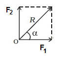
⇒α+β=90°
⇒β=90°-α
⇒F
1=Rsinβ/sin(α+β)
⇒F
1=Rsin(90-α) /sin{α+(90-α)}
⇒F
1=Rcosα/sin90°
⇒
Similarly,F
2=Rsinα/sin(α+β)
⇒F
2=Rsinα/sin90°
⇒
Resultant of co-planer & concurrent forces-
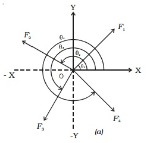
The resultant of a number of co-planer & concurrent forces acting on a body is
worked out by adopting step-by-step procedure.
Step 1→ Find the components of each forces in the system in two mutually
perpendicular
x and
y direction.
Step 2→ Make algebric addition of each forces or components in each
direction to get two components.
Step 3→ Obtained the resultant both magnitude and direction by combining
the two components of forces i.e.
∑Fx and
∑Fy
which are mutually perpendicular.
R²=(∑Fx)²+(∑Fy)²
tanθ=∑Fx/∑Fy
where,θ is the angle of resultant force with horizontal.
∑F
x=F
1cosθ
1 +F
2cosθ
2+
F
3cosθ
3+F
4cosθ
4.
∑F
y=F
1sinθ
1+F
2cosθ
2
+F
3cosθ
3+F
4cosθ
4
Lami's theorem-
It state that if a body is in equilibrium under the action of three forces each
force is proportional to the sine of the angle between the other two forces.
 F1/sinα=F2/sinβ=F3/sinγ
F1/sinα=F2/sinβ=F3/sinγ
Q⪢ A machine weighing 5KN supporting by two chains attached to same
point on the machine. One chain goes to the hook in the sealing and has an inclination
45° with the horizontal and the other chain goes to the eyevolt in the wall and
is inclined at 30° to the horizontal. Make calculation for tension induced in the
chain.
Sol -

from lami's theorem,
⇒T
1/sin(90°+30°)=T
2/sin(90°+45°)=W/sin(105°)
so, T
1/cos30°=5KN/sin(105°)
⇒T
1=4.48KN
Ans
And, T
2/cos45°=W/sin(105°)
⇒T
2=3.66KN
Ans
Q⪢ Find out the resultant of given forces as shown in fig.
 Sol -
Sol -
we know that,
R²=(∑Fx)²+(∑Fy)² --------eq(1)
so, ∑F
x=20+15cos60°-25cos30°
∑F
x=5.85KN
∑F
y=30+15sin60°+25sin30°
∑F
y=55.45KN
from eq 1,
R²=(5.85)²+(55.45)²
R=55.75KN
Ans
And, tanθ= ∑F
y/ ∑F
x
θ=tan
-1(55.45/ 5.85)=83.9
Ans
Free body diagram-
The diagram showing the body free from all the other bodies in contact and showing
all the forces acting on it including selfweight and reaction from the other bodies
removed.
 Q⪢ A sphere weighing 100N is tide to a smooth wall by a string as
shown in fig. Find the tension T in the string and reaction R from the ball.
Q⪢ A sphere weighing 100N is tide to a smooth wall by a string as
shown in fig. Find the tension T in the string and reaction R from the ball.
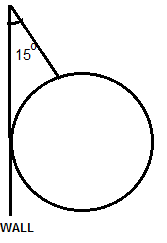
Sol -
from lami's theorem,
T/sin90°=R/sin165°=W/sin150°
considering, T/sin90°=W/sin150°
⇒T=sin90°*100/sin150°=103.53N
Ans
considering, R/sin165°=W/sin150°
⇒T=sin165°*100/sin150°=26.7N
Ans
Q⪢Find the magnitude and direction of a given system of forces
as shown in the fig.
Sol -
∑F
x=0
⇒ 300+400cos30°+600cos50°-1200cos65°=0
⇒ 524.94N
∑F
y=0
⇒ 800+400sin30°-600sin50°-1200sin65°=0
⇒ -547.19N
R²=(∑F
x)²+(∑F
y)²
⇒R²=(524.94)²+(-547.19)²
⇒R=758.27N
Ans
And, tanθ= ∑F
y/ ∑F
x
⇒θ=tan
-1(-547.19/ 524.94)=46.189
Ans
Moment of force-
It is the turning effect produced by a force on the body on which it acts
where, p=force acting on the body
l=distance.
The moment of a force is equal to the product of the forces and perpendicular distance
of the point about which the moment is required and the line of the force.
Unit of the moment is Nm.
- Type of moment -
- Clockwise
- Anti-clockwise
NOTE- The general sign convention is to take Clockwise moment as +ve and Anti-clockwise
moment as -ve.
- Vanignan's theorem (principle of moment)-
The algebric sum of moment of a system of co-planer forces about a moment center is
equal to their resultant forces about the same moment center.
Q⪢The moment of given system of force about point "A" is zero then find the
value of force "P".
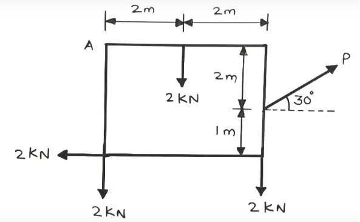
sol-

↻+ve ∑M
A=0
⇒(0x3)+(2x2)+(2x4)+(2x3)-Psin30°x4-Pcos30°x2=0
⇒4+8+6-4Psin30°-2Pcos30°=0
⇒18-2P-√3P=0
⇒3.732P=18
⇒P=4.823KN
Ans
Q⪢Calculate the moment about point B for the force system in fig.
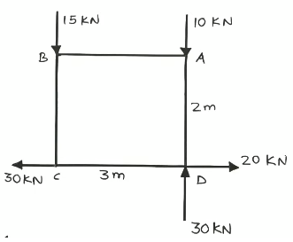
Sol-
↻+ve ∑M
B= 0+(10x3)-(20x2)-(30x3)+(30x2)
=30-40-90+60
=-40KNm
OR 40KNm(Anti-clockwise).
Ans
Q⪢A force of 1200N acts on a braket find the moment of a force about 'A'
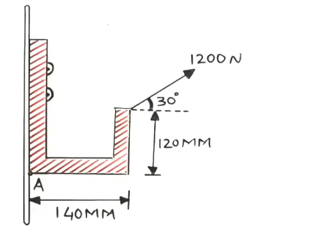
Sol-

↻+ve ∑M
A=(-1200sin30° x 140)+(1200cos30° x 120)
=(-1200 x 1/2 x 140)+ (1200 x √3/2 x 120)
=-84000 + 124707.658
=40707.658Nmm
OR 40707.658Nmm(Clockwise).
Ans
Q⪢Find the algebric sum of moment of all the forces as shown in fig. about 'C'
Consider AB=BC=CA=1m

Sol-
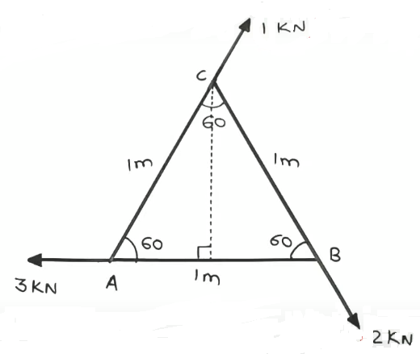
we know that,
sin60°=p/h=p/1
∴ p=√3/2=0.866m
So, ↻+ve∑M
C=(3 x 0.866)+0+0
=2.598KNm
Ans
Equilibrium-
Types of support-
- Simple support-
The end of the beam rest on a rigid support.

- Roller support-
In this case beam end is support on the roller. In such cases reaction is always normal to the
support.
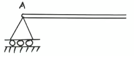
- Hinged or pinned support-
In such cases the position of the end of the beam is fixed but the end is freed to rotate.

- Fixed support-
At fixed support the end of beam is neither permited to move in any direction nor allow to rotate.

Type of beam-
- Cantilever-
- Simply supported beam-
Q⪢Find the reaction at support 'A'and 'B' for the beam shown in fig.

Sol-
Free body diagram of beam AB,
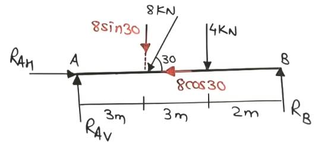
⇒→+ve∑F
x = 0
⇒R
AH-8cos30° = 0
⇒R
AH = 8 x √3/2
⇒R
AH = 6.928KN
Ans
⇒↑+ve∑F
y = 0
⇒R
Av-8sin30°-4+R
B = 0
⇒R
AV+R
B-8= 0 --------eq1
⇒↻+ve ∑M
A = 0
⇒(8sin30° x 3)+(4x6)-(R
B x 8) = 0
⇒12+24-8R
B = 0
⇒R
B = 36/8 =4.5KN
Ans
putting R
B in eq1,
⇒R
AV = 3.5KN
Ans
Q⪢Find the reaction at support 'A'and 'B' for the beam shown in fig.
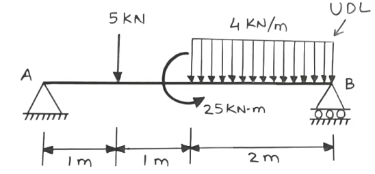
Sol-
Free body diagram of beam AB,

uniform distributed load = bxh
= 2m x 4KN/m
= 8KN
And, b/2=1m (distance)
⇒→+ve∑F
x = 0
∴ R
AH = 0
Ans
⇒↑+ve∑F
y = 0
⇒ R
AV-5-8+R
B = 0
⇒R
AV+R
B = 13 --------eq1
⇒↻+ve ∑M
A = 0
⇒(5x1)+(8x3)-(R
B x 4)-25 = 0
⇒5+2-4R
B-25 = 0
⇒4-4R
B = 0
⇒R
B = 1KN
Ans
putting R
B in eq1,
∴R
AV+1 = 13
⇒ R
AV = 12KN
Ans
Q⪢Find the reaction at support 'A'and 'B' for the beam shown in fig.
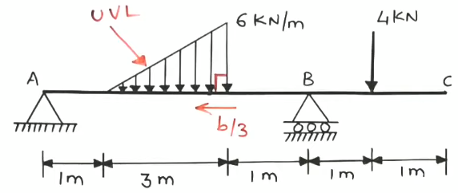
Sol-
Free body diagram of beam ABC,
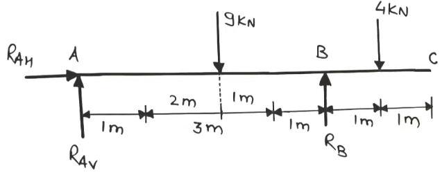
uniform varing load = 1/2 xbxh
=1/2 x3x6
=9KN
And, b/3=3/3=1m(distance)
⇒→+ve∑F
x = 0
∴ R
AH = 0
Ans
⇒↑+ve∑F
y = 0
⇒ R
AV-9+R
B-4 = 0
⇒R
AV+R
B = 13 --------eq1
⇒↻+ve ∑M
A = 0
⇒(9x3)-(4x6)-(R
B x 5) = 0
⇒27-5R
B+24 = 0
⇒ -5R
B+51 = 0
⇒R
B = 51/5 = 10.2KN
Ans
putting R
B in eq1,
∴R
AV+10.2 = 13
⇒ R
AV = 2.8KN
Ans
Q⪢Find the value of support reaction, when reaction at A will be
double that of B. Find 'X' weight of 1st and 2st sphere is 1800N and 600N

Sol-
Free body diagram of beam AB,
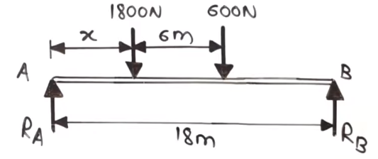
Given that, R
A = 2R
B
⇒↑+ve∑F
y = 0
⇒ R
A-1800-600+R
B = 0
⇒ 2R
B+R
B-2400 = 0
⇒ 3R
B = 2400
⇒ R
B = 800N
∴ R
A = 2R
B = 2x800 = 1600N
⇒↻+ve ∑M
A = 0
⇒ 0+(1800 x X;)-{600x(6+X)}-(R
B x18) = 0
⇒1800X + 3600 + 600X - (800x18) = 0
⇒ 2400X - 10800 = 0
⇒ X = 10800/2400 = 4.5m
Ans
Q⪢Calculate support reaction for the beam loaded as shown.

Sol-
Free body diagram of beam AB,

uniform distributed load = bxh
=4x300
=1200KN
And, b/2=4/2=2m(distance)
⇒↑+ve∑F
y = 0
⇒ R
A-1200-2000-1200+R
B = 0
⇒R
A-4400+R
B = 0
⇒R
A+R
B = 4400N --------eq1
⇒↻+ve ∑M
A = 0
⇒ 0 -(1200x2)-(2000x4)+(R
A x 6)-(1200x8) = 0
⇒ -2400-8000+6R
A-9600 = 0
⇒ 6R
A = 20000
⇒ R
A = 20000/6 = 3333.34N
Ans
putting R
A in eq1,
∴R
B+3333.34 = 4400
⇒ R
B = 666.67N
Ans